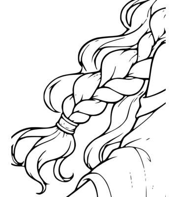

A - 40%


A = 40% (thinner), B = 50% (current), C = 60% (thicker). Only the initial threshold changes; crop, blur, tracing and region-generation settings stay the same. No production asset is replaced. Colors show region IDs, which can change between variants; compare boundaries rather than matching colors.
| Variant | Threshold | Ink paths | Closed ink contours | Regions |
|---|---|---|---|---|
| A | 40% | 129 | 292 | 168 |
| B | 50% | 133 | 338 | 212 |
| C | 60% | 108 | 342 | 247 |
Open detail comparison sheet | Original numbered baseline
Same crop from each traced SVG rendered at 8x. Click for native pixels.
Same crop from each traced SVG rendered at 8x. Click for native pixels.
Same crop from each traced SVG rendered at 8x. Click for native pixels.